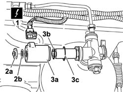
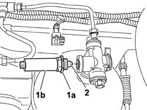
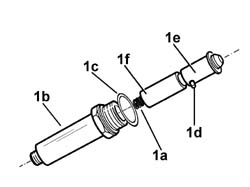
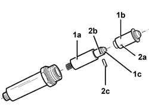
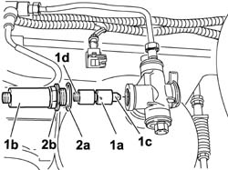

1042A20 injection system solenoid on cylinder r r
- Path
- Procedures > 10 ENGINE > 1042 (METHANE) CNG CANISTER AND PIPES > 1042A methane gas cannister and tubes for re-charging > 1042A20 injection system solenoid on cylinder r r
- Kind
- repair procedure (removal / refitting; the operation number is the code)
- Applies to
- all engines; all production periods; only with equipment: BIPOWER
- Interactive page
- https://sloeber94.github.io/elrnDB-fDbl/en/#/2584520
Applies to: all engines; all production periods; only with equipment: Cargo trim level and BIPOWER
 Removing
Removing
 Refitting
RefittingPlace the vehicle on a lift.
Drain the high pressure circuit as described in theh specific operation 1042A02 C.N.G. - FUEL SYSTEM Safety check .
1. Disconnect the electrical connector on the solenoid coil.
 | Name | Connector |
|---|---|---|
1 | Methane supply solenoid | L60 |
2. Undo the nut (2a) complete with sealing ring (2b) securing the solenoid coil.
3. Withdraw the solenoid coil (3a), sealing ring (3b) and metal compression ring (3c).

Applies to: all engines; all production periods; only with equipment: Cargo trim level and BIPOWER
1. Undo the nut (1a) securing the coil holder ring nut (1b).
2. Remove the piston unit.

Applies to: all engines; all production periods; only with equipment: Cargo trim level and BIPOWER
1. Withdraw the shutter-piston unit, complete with spring (1a), from the tube (1b), then remove the sealing ring (1c) and withdraw the pin (1d) to separate the piston (1e) from the shutter (1f).

Applies to: all engines; all production periods; only with equipment: Cargo trim level and BIPOWER
Applies to: all engines; all production periods; only with equipment: Cargo trim level and BIPOWER
Refitting
Removing1. Fit the shutter (1a) in the new piston (1b) housing with the tip (1c) of the shutter facing towards the inside of the piston.
2. Match the openings (2a) in the piston with the openings (2b) in the shuter; insert the piston unit retaining pin (2c) in the openings aligned previously.

Applies to: all engines; all production periods; only with equipment: Cargo trim level and BIPOWER
1. Insert the spring (1d) in the special housing in the shutter, then fit the piston - shutter assembly (1a) on the cover (1b), positioning it so that the tapered section (1c) of the piston is facing the valve assembly.
2. Position the sealing ring (2a) and tighten the nut (2b) securing the coil ring nut to the specific torque.
 | Fastening | Component | Ø | Value (daNm) |
|---|---|---|---|---|
2 | Nut | SOLENOID VALVE COIL HOLDER RING NUT | - | 2.8 |

Applies to: all engines; all production periods; only with equipment: Cargo trim level and BIPOWER
Fit the sealing ring, metal compression ring and the coil; secure it by means of its nut complete with sealing ring.
| Fastening | Component | Ø | Value (daNm) |
|---|---|---|---|---|
- | Nut | SOLENOID VALVE COIL ON CANISTER | - | 0.9 |
Manually set the CNG cut-off solenoids to the open position and check that the system is working.
Connect the Examiner diagnostic instrument in the 'Active Diagnosis' environment, and select and run 'Gas solenoids relay' to allow the solenoids to open and to restore the CNG system operating pressure; read the pressure value given by the sensor (located on the pressure reduction unit in the engine compartment) which should be greater than or equal to 11 bar, otherwise it will not be possible to switch from petrol to methane.
Remove the vehicle from the lift.
1042A06 C.N.G. - FUEL SYSTEM check for any leaks using electronic detector following operations .
Topics linked from this page (2)
- 1042A02 C.N.G. - FUEL SYSTEM Safety check
- 1042A06 C.N.G. - FUEL SYSTEM check for any leaks using electronic detector following operations